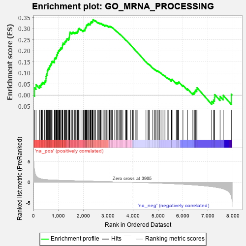
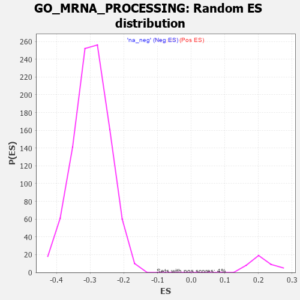

| | | Dataset | 7d |
| Phenotype | NoPhenotypeAvailable |
| Upregulated in class | na_pos |
| GeneSet | GO_MRNA_PROCESSING |
| Enrichment Score (ES) | 0.34105703 |
| Normalized Enrichment Score (NES) | 1.6010419 |
| Nominal p-value | 0.0 |
| FDR q-value | 0.23825511 |
| FWER p-Value | 1.0 |
Table: GSEA Results Summary

Fig 1: Enrichment plot: GO_MRNA_PROCESSING
Profile of the Running ES Score & Positions of GeneSet Members on the Rank Ordered List
| PROBE | GENE SYMBOL | GENE_TITLE | RANK IN GENE LIST | RANK METRIC SCORE | RUNNING ES | CORE ENRICHMENT | | 1 | PCBP4 | | | 44 | 2.875 | 0.0332 | Yes |
| 2 | ZMAT2 | | | 104 | 1.587 | 0.0471 | Yes |
| 3 | SRSF9 | | | 240 | 0.950 | 0.0426 | Yes |
| 4 | CCNH | | | 301 | 0.817 | 0.0460 | Yes |
| 5 | ZMAT5 | | | 326 | 0.774 | 0.0534 | Yes |
| 6 | LARP7 | | | 369 | 0.731 | 0.0578 | Yes |
| 7 | CPSF2 | | | 440 | 0.666 | 0.0579 | Yes |
| 8 | LEO1 | | | 463 | 0.655 | 0.0639 | Yes |
| 9 | PHRF1 | | | 500 | 0.629 | 0.0678 | Yes |
| 10 | MYOD1 | | | 504 | 0.628 | 0.0759 | Yes |
| 11 | THOC1 | | | 507 | 0.627 | 0.0841 | Yes |
| 12 | SF3B4 | | | 521 | 0.622 | 0.0909 | Yes |
| 13 | PRCC | | | 543 | 0.614 | 0.0965 | Yes |
| 14 | JMJD6 | | | 553 | 0.613 | 0.1036 | Yes |
| 15 | CSTF1 | | | 557 | 0.610 | 0.1115 | Yes |
| 16 | CCNB1 | | | 581 | 0.601 | 0.1166 | Yes |
| 17 | SNIP1 | | | 604 | 0.593 | 0.1218 | Yes |
| 18 | PLRG1 | | | 644 | 0.579 | 0.1246 | Yes |
| 19 | RBM4 | | | 649 | 0.576 | 0.1319 | Yes |
| 20 | CDK7 | | | 686 | 0.564 | 0.1349 | Yes |
| 21 | PHF5A | | | 701 | 0.560 | 0.1407 | Yes |
| 22 | SF3B3 | | | 729 | 0.552 | 0.1447 | Yes |
| 23 | LSM8 | | | 733 | 0.549 | 0.1517 | Yes |
| 24 | CPSF6 | | | 778 | 0.538 | 0.1534 | Yes |
| 25 | PPWD1 | | | 841 | 0.521 | 0.1524 | Yes |
| 26 | PPIE | | | 842 | 0.521 | 0.1595 | Yes |
| 27 | SAP18 | | | 850 | 0.519 | 0.1656 | Yes |
| 28 | CMTR1 | | | 877 | 0.511 | 0.1692 | Yes |
| 29 | PRPF3 | | | 917 | 0.503 | 0.1710 | Yes |
| 30 | SF3A2 | | | 928 | 0.500 | 0.1765 | Yes |
| 31 | CWC22 | | | 938 | 0.498 | 0.1820 | Yes |
| 32 | CTR9 | | | 964 | 0.492 | 0.1855 | Yes |
| 33 | ZPR1 | | | 967 | 0.491 | 0.1919 | Yes |
| 34 | SSU72 | | | 996 | 0.485 | 0.1948 | Yes |
| 35 | CPSF1 | | | 1005 | 0.482 | 0.2003 | Yes |
| 36 | ISY1 | | | 1036 | 0.476 | 0.2029 | Yes |
| 37 | RBM15 | | | 1057 | 0.473 | 0.2067 | Yes |
| 38 | NCBP3 | | | 1087 | 0.466 | 0.2093 | Yes |
| 39 | DDX47 | | | 1103 | 0.463 | 0.2136 | Yes |
| 40 | RBM42 | | | 1145 | 0.455 | 0.2145 | Yes |
| 41 | UBL5 | | | 1162 | 0.452 | 0.2186 | Yes |
| 42 | GRSF1 | | | 1164 | 0.452 | 0.2246 | Yes |
| 43 | ERCC3 | | | 1173 | 0.451 | 0.2296 | Yes |
| 44 | CLP1 | | | 1182 | 0.450 | 0.2347 | Yes |
| 45 | CPSF3 | | | 1237 | 0.440 | 0.2337 | Yes |
| 46 | PPIL1 | | | 1262 | 0.437 | 0.2365 | Yes |
| 47 | CDC73 | | | 1265 | 0.436 | 0.2422 | Yes |
| 48 | THOC3 | | | 1297 | 0.430 | 0.2440 | Yes |
| 49 | THOC6 | | | 1316 | 0.426 | 0.2475 | Yes |
| 50 | SNRPA | | | 1340 | 0.422 | 0.2502 | Yes |
| 51 | SF3A1 | | | 1346 | 0.420 | 0.2552 | Yes |
| 52 | CSTF3 | | | 1408 | 0.409 | 0.2529 | Yes |
| 53 | LSM4 | | | 1426 | 0.405 | 0.2562 | Yes |
| 54 | RBM10 | | | 1430 | 0.404 | 0.2613 | Yes |
| 55 | PTBP1 | | | 1441 | 0.402 | 0.2655 | Yes |
| 56 | LSM6 | | | 1444 | 0.402 | 0.2706 | Yes |
| 57 | WBP11 | | | 1451 | 0.400 | 0.2753 | Yes |
| 58 | BUD13 | | | 1460 | 0.398 | 0.2796 | Yes |
| 59 | U2AF2 | | | 1466 | 0.396 | 0.2843 | Yes |
| 60 | SON | | | 1538 | 0.385 | 0.2804 | Yes |
| 61 | DHX35 | | | 1563 | 0.381 | 0.2825 | Yes |
| 62 | PAF1 | | | 1588 | 0.376 | 0.2845 | Yes |
| 63 | ESRP1 | | | 1653 | 0.364 | 0.2812 | Yes |
| 64 | SLTM | | | 1681 | 0.360 | 0.2826 | Yes |
| 65 | ERCC2 | | | 1712 | 0.354 | 0.2835 | Yes |
| 66 | LSM7 | | | 1754 | 0.344 | 0.2829 | Yes |
| 67 | PTBP3 | | | 1763 | 0.344 | 0.2865 | Yes |
| 68 | LSM10 | | | 1783 | 0.340 | 0.2887 | Yes |
| 69 | STRAP | | | 1793 | 0.339 | 0.2921 | Yes |
| 70 | THOC2 | | | 1796 | 0.338 | 0.2964 | Yes |
| 71 | FMR1 | | | 1816 | 0.334 | 0.2985 | Yes |
| 72 | LSM2 | | | 1829 | 0.332 | 0.3015 | Yes |
| 73 | TRUB2 | | | 1908 | 0.319 | 0.2958 | Yes |
| 74 | GPKOW | | | 1985 | 0.307 | 0.2902 | Yes |
| 75 | SF3B5 | | | 2009 | 0.303 | 0.2913 | Yes |
| 76 | NSRP1 | | | 2028 | 0.301 | 0.2931 | Yes |
| 77 | LUC7L | | | 2060 | 0.297 | 0.2931 | Yes |
| 78 | RBMX2 | | | 2067 | 0.296 | 0.2963 | Yes |
| 79 | SF3B1 | | | 2071 | 0.295 | 0.3000 | Yes |
| 80 | SART3 | | | 2084 | 0.293 | 0.3024 | Yes |
| 81 | LSM1 | | | 2098 | 0.291 | 0.3046 | Yes |
| 82 | RBM27 | | | 2111 | 0.289 | 0.3070 | Yes |
| 83 | CPSF4 | | | 2118 | 0.288 | 0.3101 | Yes |
| 84 | TRA2A | | | 2125 | 0.287 | 0.3132 | Yes |
| 85 | WBP4 | | | 2134 | 0.286 | 0.3161 | Yes |
| 86 | DDX42 | | | 2151 | 0.284 | 0.3179 | Yes |
| 87 | C1QBP | | | 2189 | 0.278 | 0.3169 | Yes |
| 88 | DHX16 | | | 2196 | 0.277 | 0.3199 | Yes |
| 89 | THOC7 | | | 2198 | 0.277 | 0.3235 | Yes |
| 90 | SRSF1 | | | 2252 | 0.267 | 0.3203 | Yes |
| 91 | LSM3 | | | 2282 | 0.263 | 0.3201 | Yes |
| 92 | RPRD2 | | | 2283 | 0.263 | 0.3237 | Yes |
| 93 | AAR2 | | | 2291 | 0.261 | 0.3263 | Yes |
| 94 | REST | | | 2308 | 0.259 | 0.3277 | Yes |
| 95 | SRSF4 | | | 2311 | 0.258 | 0.3310 | Yes |
| 96 | CDC5L | | | 2353 | 0.253 | 0.3291 | Yes |
| 97 | U2AF1 | | | 2359 | 0.252 | 0.3319 | Yes |
| 98 | SYMPK | | | 2381 | 0.248 | 0.3326 | Yes |
| 99 | SLU7 | | | 2382 | 0.248 | 0.3359 | Yes |
| 100 | NCBP2 | | | 2383 | 0.248 | 0.3393 | Yes |
| 101 | RBM19 | | | 2396 | 0.246 | 0.3411 | Yes |
| 102 | KDM1A | | | 2447 | 0.237 | 0.3378 | No |
| 103 | SARNP | | | 2496 | 0.227 | 0.3347 | No |
| 104 | SF3B2 | | | 2566 | 0.217 | 0.3288 | No |
| 105 | PDE12 | | | 2608 | 0.211 | 0.3264 | No |
| 106 | DBR1 | | | 2642 | 0.207 | 0.3250 | No |
| 107 | WDR83 | | | 2669 | 0.203 | 0.3244 | No |
| 108 | SRSF3 | | | 2696 | 0.199 | 0.3237 | No |
| 109 | DDX1 | | | 2718 | 0.196 | 0.3237 | No |
| 110 | PPIH | | | 2790 | 0.184 | 0.3171 | No |
| 111 | BUD31 | | | 2797 | 0.183 | 0.3188 | No |
| 112 | AQR | | | 2863 | 0.173 | 0.3128 | No |
| 113 | DCPS | | | 2873 | 0.170 | 0.3139 | No |
| 114 | CIRBP | | | 2876 | 0.170 | 0.3160 | No |
| 115 | RBM5 | | | 2910 | 0.164 | 0.3139 | No |
| 116 | RBM4B | | | 2918 | 0.163 | 0.3152 | No |
| 117 | CDK13 | | | 2944 | 0.158 | 0.3142 | No |
| 118 | RRP1B | | | 2986 | 0.152 | 0.3110 | No |
| 119 | BRDT | | | 3028 | 0.145 | 0.3077 | No |
| 120 | CSTF2 | | | 3029 | 0.145 | 0.3096 | No |
| 121 | SRRT | | | 3050 | 0.143 | 0.3090 | No |
| 122 | PAN3 | | | 3054 | 0.142 | 0.3105 | No |
| 123 | RBBP6 | | | 3066 | 0.141 | 0.3110 | No |
| 124 | SMU1 | | | 3101 | 0.137 | 0.3085 | No |
| 125 | RBM41 | | | 3122 | 0.134 | 0.3077 | No |
| 126 | ERN2 | | | 3160 | 0.129 | 0.3047 | No |
| 127 | RBM22 | | | 3182 | 0.125 | 0.3037 | No |
| 128 | NUP98 | | | 3261 | 0.112 | 0.2952 | No |
| 129 | PPIL3 | | | 3317 | 0.103 | 0.2895 | No |
| 130 | RBM8A | | | 3355 | 0.096 | 0.2861 | No |
| 131 | TUT4 | | | 3394 | 0.090 | 0.2824 | No |
| 132 | TGS1 | | | 3456 | 0.084 | 0.2757 | No |
| 133 | DDX46 | | | 3484 | 0.080 | 0.2734 | No |
| 134 | PQBP1 | | | 3526 | 0.072 | 0.2691 | No |
| 135 | CHERP | | | 3587 | 0.062 | 0.2622 | No |
| 136 | DHX9 | | | 3693 | 0.044 | 0.2493 | No |
| 137 | HSF1 | | | 3718 | 0.039 | 0.2468 | No |
| 138 | CASC3 | | | 3727 | 0.037 | 0.2462 | No |
| 139 | CCAR1 | | | 3737 | 0.036 | 0.2456 | No |
| 140 | SRSF2 | | | 3759 | 0.033 | 0.2433 | No |
| 141 | RBM39 | | | 3904 | 0.010 | 0.2249 | No |
| 142 | SF3A3 | | | 3976 | -0.003 | 0.2159 | No |
| 143 | SYF2 | | | 4008 | -0.009 | 0.2120 | No |
| 144 | DDX20 | | | 4083 | -0.021 | 0.2028 | No |
| 145 | CDK12 | | | 4148 | -0.033 | 0.1950 | No |
| 146 | DDX17 | | | 4161 | -0.035 | 0.1940 | No |
| 147 | SNW1 | | | 4514 | -0.096 | 0.1501 | No |
| 148 | PDCD7 | | | 4595 | -0.117 | 0.1414 | No |
| 149 | SPEN | | | 4621 | -0.122 | 0.1398 | No |
| 150 | DDX23 | | | 4658 | -0.129 | 0.1369 | No |
| 151 | SRPK2 | | | 4790 | -0.155 | 0.1222 | No |
| 152 | CWC27 | | | 4848 | -0.168 | 0.1172 | No |
| 153 | SUGP1 | | | 4887 | -0.174 | 0.1146 | No |
| 154 | PCF11 | | | 4958 | -0.190 | 0.1082 | No |
| 155 | TRA2B | | | 4962 | -0.191 | 0.1104 | No |
| 156 | A1CF | | | 5002 | -0.198 | 0.1081 | No |
| 157 | DDX41 | | | 5058 | -0.211 | 0.1039 | No |
| 158 | NOVA2 | | | 5118 | -0.231 | 0.0994 | No |
| 159 | NOVA1 | | | 5197 | -0.247 | 0.0928 | No |
| 160 | CELF4 | | | 5275 | -0.266 | 0.0865 | No |
| 161 | DHX15 | | | 5366 | -0.288 | 0.0788 | No |
| 162 | CIR1 | | | 5430 | -0.302 | 0.0748 | No |
| 163 | MFAP1 | | | 5535 | -0.329 | 0.0659 | No |
| 164 | PCBP2 | | | 5539 | -0.331 | 0.0700 | No |
| 165 | RBM25 | | | 5562 | -0.336 | 0.0717 | No |
| 166 | TIA1 | | | 5731 | -0.386 | 0.0554 | No |
| 167 | SRRM1 | | | 5775 | -0.398 | 0.0552 | No |
| 168 | PAN2 | | | 5807 | -0.408 | 0.0568 | No |
| 169 | CELF5 | | | 5830 | -0.414 | 0.0595 | No |
| 170 | TUT7 | | | 5997 | -0.471 | 0.0446 | No |
| 171 | PSIP1 | | | 6177 | -0.531 | 0.0288 | No |
| 172 | PRDX6 | | | 6396 | -0.615 | 0.0091 | No |
| 173 | SF3B6 | | | 6444 | -0.637 | 0.0117 | No |
| 174 | CELF3 | | | 6475 | -0.651 | 0.0166 | No |
| 175 | PTBP2 | | | 6499 | -0.661 | 0.0226 | No |
| 176 | DHX8 | | | 6555 | -0.686 | 0.0249 | No |
| 177 | SRRM2 | | | 6561 | -0.689 | 0.0335 | No |
| 178 | DDX5 | | | 7152 | -1.037 | -0.0282 | No |
| 179 | RBM38 | | | 7225 | -1.100 | -0.0226 | No |
| 180 | CDK9 | | | 7266 | -1.138 | -0.0123 | No |
| 181 | QKI | | | 7272 | -1.145 | 0.0025 | No |
| 182 | XRN2 | | | 7488 | -1.384 | -0.0064 | No |
| 183 | IWS1 | | | 7613 | -1.587 | -0.0008 | No |
| 184 | WDR33 | | | 7939 | -3.452 | 0.0041 | No |
Table: GSEA details [plain text format]

Fig 2: GO_MRNA_PROCESSING: Random ES distribution
Gene set null distribution of ES for GO_MRNA_PROCESSING